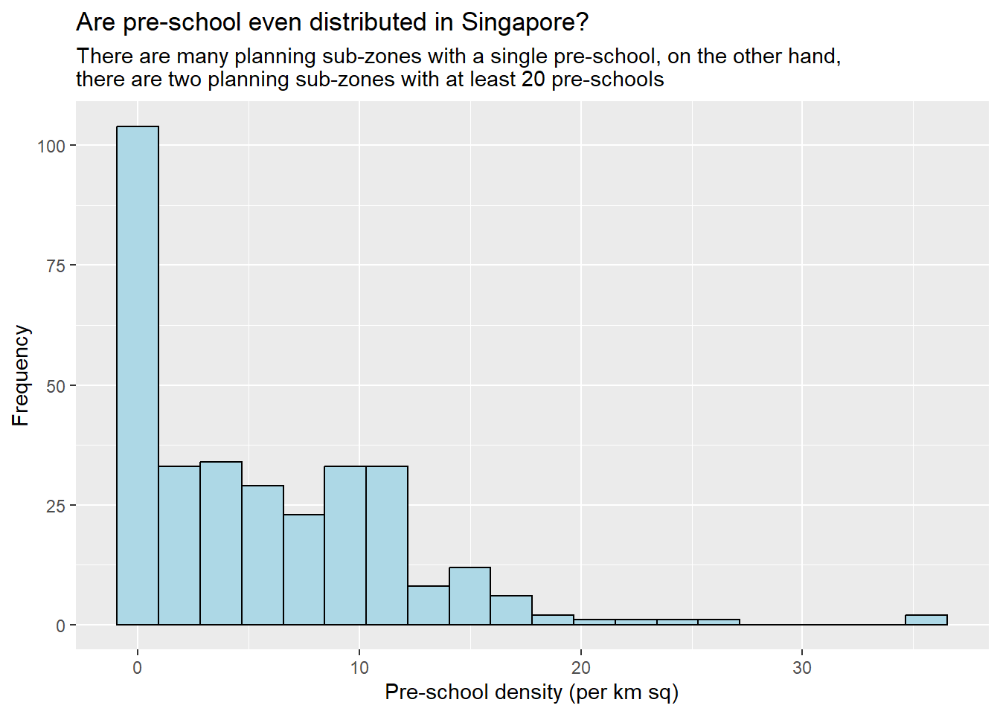

Show the code
pacman::p_load(sf, tidyverse, readr, readxl, ggplot2, dplyr, tidyr, units)November 18, 2022
installing and loading sf and tidyverse packages into R environment,
importing geospatial data by using appropriate functions of sf package,
importing aspatial data by using appropriate function of readr package,
exploring the content of simple feature data frame by using appropriate Base R and sf functions,
assigning or transforming coordinate systems by using using appropriate sf functions,
converting an aspatial data into a sf data frame by using appropriate function of sf package,
performing geoprocessing tasks by using appropriate functions of sf package,
performing data wrangling tasks by using appropriate functions of dplyr package and
performing Exploratory Data Analysis (EDA) by using appropriate functions from ggplot2 package.
sf for importing, managing, and processing geospatial data.
tidyverse for performing data science tasks such as importing, wrangling and visualising data.
readr for importing csv data
readxl for importing Excel worksheet
tidyr for manipulating data
dplyr for transforming data
ggplot2 for visualising data
Usage of the code chunk below :
p_load( ) - pacman - to load packages into R environment. This function will attempt to install the package from CRAN or the pacman repository list if it is not installed.
Remarks :
sf, sp, (rgdal, rgeos both are retiring by year 2023), tidyverse, questionr, janitor, psych, ggplot2, gcookbook, tmap, ggpubr, egg, corrplot, gtsummary, regclass, caret, heatmaply, ggdendro, cluster, factoextra, spdep, ClustGeo, GGally, skimr, stringr, funModeling, knitr, caTools, viridis, rgeoda, cowplot, patchwork.
Alternate code chunk -
Download Master Plan 2014 Subzone Boundary (web)
Download Pre-School Location
This section focus on importing dataset in shapefile format.
Usage of the code chunk below :
st_read( ) - sf - to read simple features for “MP14_SUBZONE_WEB_PL” and name as “mpsz”.
dsn( ) -to define the data path. DSN = data source name.
layer( ) -to provide shapefile name.
Reading layer `MP14_SUBZONE_WEB_PL' from data source
`D:\jephOstan\ISSS624\data\geospatial' using driver `ESRI Shapefile'
Simple feature collection with 323 features and 15 fields
Geometry type: MULTIPOLYGON
Dimension: XY
Bounding box: xmin: 2667.538 ymin: 15748.72 xmax: 56396.44 ymax: 50256.33
Projected CRS: SVY21Remarks :
Observations : 323 in multipolygon
CRS : Projected CRS i.e. SVY21
Reading layer `CyclingPath' from data source
`D:\jephOstan\ISSS624\data\geospatial' using driver `ESRI Shapefile'
Simple feature collection with 2248 features and 2 fields
Geometry type: MULTILINESTRING
Dimension: XY
Bounding box: xmin: 11854.32 ymin: 28347.98 xmax: 42626.09 ymax: 48948.15
Projected CRS: SVY21Remarks :
Observations : 2,248 in multilinestring
CRS : Projected CRS i.e. SVY21
Reading layer `PRESCHOOLS_LOCATION' from data source
`D:\jephOstan\ISSS624\data\geospatial\pre-schools-location-kml.kml'
using driver `KML'
Simple feature collection with 1925 features and 2 fields
Geometry type: POINT
Dimension: XYZ
Bounding box: xmin: 103.6824 ymin: 1.247759 xmax: 103.9897 ymax: 1.462134
z_range: zmin: 0 zmax: 0
Geodetic CRS: WGS 84Remarks :
Observations : 1,925 in point
CRS : Geodetic CRS i.e. SVY21
Two (2) key functions i.e. Import and Inspect.
Usage of the code chunk below :
read_csv( ) - qtl2 - to read a csv file.
Rows: 4161 Columns: 18
── Column specification ────────────────────────────────────────────────────────
Delimiter: ","
chr (6): name, host_name, neighbourhood_group, neighbourhood, room_type, l...
dbl (11): id, host_id, latitude, longitude, price, minimum_nights, number_o...
date (1): last_review
ℹ Use `spec()` to retrieve the full column specification for this data.
ℹ Specify the column types or set `show_col_types = FALSE` to quiet this message.Remarks :
Consists of 4,161 observations over 18 variables
Assume CRS as WGS84
Usage of the code chunk below :
list( ) - base - to list data.
Two (2) key functions i.e. Convert and Inspect.
Usage of the code chunk below :
st_as_sf( ) - sf - to convert aspatial object to an sf object.
coords - provide x-coordinates first before y-coordinates.
crs - define the coordinates reference system with 4326.
%>% - to nest st_transform() to transform the newly created simple feature data frame into svy21 projected CRS.
Remarks :
“geometry” is creaed while “longitude” and “latitude” are removed.
Rows: 4,161
Columns: 17
$ id <dbl> 50646, 71609, 71896, 71903, 275344, 289…
$ name <chr> "Pleasant Room along Bukit Timah", "Ens…
$ host_id <dbl> 227796, 367042, 367042, 367042, 1439258…
$ host_name <chr> "Sujatha", "Belinda", "Belinda", "Belin…
$ neighbourhood_group <chr> "Central Region", "East Region", "East …
$ neighbourhood <chr> "Bukit Timah", "Tampines", "Tampines", …
$ room_type <chr> "Private room", "Private room", "Privat…
$ price <dbl> 80, 145, 85, 85, 49, 184, 79, 49, 55, 5…
$ minimum_nights <dbl> 92, 92, 92, 92, 60, 92, 92, 60, 60, 60,…
$ number_of_reviews <dbl> 18, 20, 24, 47, 14, 12, 133, 17, 12, 3,…
$ last_review <date> 2014-12-26, 2020-01-17, 2019-10-13, 20…
$ reviews_per_month <dbl> 0.18, 0.15, 0.18, 0.34, 0.11, 0.10, 1.0…
$ calculated_host_listings_count <dbl> 1, 6, 6, 6, 44, 6, 7, 44, 44, 44, 6, 7,…
$ availability_365 <dbl> 365, 340, 265, 365, 296, 285, 365, 181,…
$ number_of_reviews_ltm <dbl> 0, 0, 0, 0, 1, 0, 0, 3, 2, 0, 1, 0, 0, …
$ license <chr> NA, NA, NA, NA, "S0399", NA, NA, "S0399…
$ geometry <POINT [m]> POINT (22646.02 35167.9), POINT (…There are 3 methods to do so :
Geometry set for 323 features
Geometry type: MULTIPOLYGON
Dimension: XY
Bounding box: xmin: 2667.538 ymin: 15748.72 xmax: 56396.44 ymax: 50256.33
Projected CRS: SVY21
First 5 geometries:MULTIPOLYGON (((31495.56 30140.01, 31980.96 296...MULTIPOLYGON (((29092.28 30021.89, 29119.64 300...MULTIPOLYGON (((29932.33 29879.12, 29947.32 298...MULTIPOLYGON (((27131.28 30059.73, 27088.33 297...MULTIPOLYGON (((26451.03 30396.46, 26440.47 303...Geometry set for 323 features
Geometry type: MULTIPOLYGON
Dimension: XY
Bounding box: xmin: 2667.538 ymin: 15748.72 xmax: 56396.44 ymax: 50256.33
Projected CRS: SVY21
First 5 geometries:MULTIPOLYGON (((31495.56 30140.01, 31980.96 296...MULTIPOLYGON (((29092.28 30021.89, 29119.64 300...MULTIPOLYGON (((29932.33 29879.12, 29947.32 298...MULTIPOLYGON (((27131.28 30059.73, 27088.33 297...MULTIPOLYGON (((26451.03 30396.46, 26440.47 303...Two common methods used i.e. glimpse( ) and head( ).
Usage of the code chunk below :
glimpse( ) - dplyr - to reveals the data type of each field / variable.
Rows: 323
Columns: 16
$ OBJECTID <int> 1, 2, 3, 4, 5, 6, 7, 8, 9, 10, 11, 12, …
$ SUBZONE_NO <int> 1, 1, 3, 8, 3, 7, 9, 2, 13, 7, 12, 6, 1…
$ SUBZONE_N <chr> "MARINA SOUTH", "PEARL'S HILL", "BOAT Q…
$ SUBZONE_C <chr> "MSSZ01", "OTSZ01", "SRSZ03", "BMSZ08",…
$ CA_IND <chr> "Y", "Y", "Y", "N", "N", "N", "N", "Y",…
$ PLN_AREA_N <chr> "MARINA SOUTH", "OUTRAM", "SINGAPORE RI…
$ PLN_AREA_C <chr> "MS", "OT", "SR", "BM", "BM", "BM", "BM…
$ REGION_N <chr> "CENTRAL REGION", "CENTRAL REGION", "CE…
$ REGION_C <chr> "CR", "CR", "CR", "CR", "CR", "CR", "CR…
$ INC_CRC <chr> "5ED7EB253F99252E", "8C7149B9EB32EEFC",…
$ FMEL_UPD_D <date> 2014-12-05, 2014-12-05, 2014-12-05, 20…
$ X_ADDR <dbl> 31595.84, 28679.06, 29654.96, 26782.83,…
$ Y_ADDR <dbl> 29220.19, 29782.05, 29974.66, 29933.77,…
$ SHAPE_Leng <dbl> 5267.381, 3506.107, 1740.926, 3313.625,…
$ SHAPE_Area <dbl> 1630379.3, 559816.2, 160807.5, 595428.9…
$ geometry <MULTIPOLYGON [m]> MULTIPOLYGON (((31495.56 3…Usage of the code chunk below :
head( ) - utils - to return the first 3 rows of an object i.e. mpsz.
Simple feature collection with 3 features and 15 fields
Geometry type: MULTIPOLYGON
Dimension: XY
Bounding box: xmin: 28160.23 ymin: 28369.47 xmax: 32362.39 ymax: 30247.18
Projected CRS: SVY21
OBJECTID SUBZONE_NO SUBZONE_N SUBZONE_C CA_IND PLN_AREA_N PLN_AREA_C
1 1 1 MARINA SOUTH MSSZ01 Y MARINA SOUTH MS
2 2 1 PEARL'S HILL OTSZ01 Y OUTRAM OT
3 3 3 BOAT QUAY SRSZ03 Y SINGAPORE RIVER SR
REGION_N REGION_C INC_CRC FMEL_UPD_D X_ADDR Y_ADDR
1 CENTRAL REGION CR 5ED7EB253F99252E 2014-12-05 31595.84 29220.19
2 CENTRAL REGION CR 8C7149B9EB32EEFC 2014-12-05 28679.06 29782.05
3 CENTRAL REGION CR C35FEFF02B13E0E5 2014-12-05 29654.96 29974.66
SHAPE_Leng SHAPE_Area geometry
1 5267.381 1630379.3 MULTIPOLYGON (((31495.56 30...
2 3506.107 559816.2 MULTIPOLYGON (((29092.28 30...
3 1740.926 160807.5 MULTIPOLYGON (((29932.33 29...Ensure all dataframes are in the same projected CRS.
Generally, there are two main steps involved.
Usage of the code chunk below :
st_crs( ) - sf - to retrieve coordinate reference system for mpsz.
Coordinate Reference System:
User input: SVY21
wkt:
PROJCRS["SVY21",
BASEGEOGCRS["SVY21[WGS84]",
DATUM["World Geodetic System 1984",
ELLIPSOID["WGS 84",6378137,298.257223563,
LENGTHUNIT["metre",1]],
ID["EPSG",6326]],
PRIMEM["Greenwich",0,
ANGLEUNIT["Degree",0.0174532925199433]]],
CONVERSION["unnamed",
METHOD["Transverse Mercator",
ID["EPSG",9807]],
PARAMETER["Latitude of natural origin",1.36666666666667,
ANGLEUNIT["Degree",0.0174532925199433],
ID["EPSG",8801]],
PARAMETER["Longitude of natural origin",103.833333333333,
ANGLEUNIT["Degree",0.0174532925199433],
ID["EPSG",8802]],
PARAMETER["Scale factor at natural origin",1,
SCALEUNIT["unity",1],
ID["EPSG",8805]],
PARAMETER["False easting",28001.642,
LENGTHUNIT["metre",1],
ID["EPSG",8806]],
PARAMETER["False northing",38744.572,
LENGTHUNIT["metre",1],
ID["EPSG",8807]]],
CS[Cartesian,2],
AXIS["(E)",east,
ORDER[1],
LENGTHUNIT["metre",1,
ID["EPSG",9001]]],
AXIS["(N)",north,
ORDER[2],
LENGTHUNIT["metre",1,
ID["EPSG",9001]]]]Usage of the code chunk below :
st_set_crs( ) - sf - to replace the coordinate reference system for mpsz.
Coordinate Reference System:
User input: EPSG:3414
wkt:
PROJCRS["SVY21 / Singapore TM",
BASEGEOGCRS["SVY21",
DATUM["SVY21",
ELLIPSOID["WGS 84",6378137,298.257223563,
LENGTHUNIT["metre",1]]],
PRIMEM["Greenwich",0,
ANGLEUNIT["degree",0.0174532925199433]],
ID["EPSG",4757]],
CONVERSION["Singapore Transverse Mercator",
METHOD["Transverse Mercator",
ID["EPSG",9807]],
PARAMETER["Latitude of natural origin",1.36666666666667,
ANGLEUNIT["degree",0.0174532925199433],
ID["EPSG",8801]],
PARAMETER["Longitude of natural origin",103.833333333333,
ANGLEUNIT["degree",0.0174532925199433],
ID["EPSG",8802]],
PARAMETER["Scale factor at natural origin",1,
SCALEUNIT["unity",1],
ID["EPSG",8805]],
PARAMETER["False easting",28001.642,
LENGTHUNIT["metre",1],
ID["EPSG",8806]],
PARAMETER["False northing",38744.572,
LENGTHUNIT["metre",1],
ID["EPSG",8807]]],
CS[Cartesian,2],
AXIS["northing (N)",north,
ORDER[1],
LENGTHUNIT["metre",1]],
AXIS["easting (E)",east,
ORDER[2],
LENGTHUNIT["metre",1]],
USAGE[
SCOPE["Cadastre, engineering survey, topographic mapping."],
AREA["Singapore - onshore and offshore."],
BBOX[1.13,103.59,1.47,104.07]],
ID["EPSG",3414]]Usage of the code chunk below :
st_transform( ) - sf - to reproject x from one coordinate system wgs84 to svy21 mathematically, which is not capable by st_set_crs().
Geometry set for 1925 features
Geometry type: POINT
Dimension: XYZ
Bounding box: xmin: 11203.01 ymin: 25596.33 xmax: 45404.24 ymax: 49300.88
z_range: zmin: 0 zmax: 0
Projected CRS: SVY21 / Singapore TM
First 5 geometries:POINT Z (13258.34 35611.04 0)POINT Z (35272.09 41373.42 0)POINT Z (25050.54 46634.14 0)POINT Z (22892.48 46127.66 0)POINT Z (34155.79 41949.13 0)To upgrade the existing cycling path, the authority needs to acquire 5 metres of reserved land on both sides of the current cycling path.
Task : determine the extent of the land acquired and its total area.
solution :
Usage of the code chunk below :
st_buffer( ) - sf - to set geometric unary operation. - dist = to set buffer distance for cyclingpath. - nQuadSegs = to set number of segments per quadrant. !!!!! dnt understand.
st_area( ) - sf - to compute area for buffer_cycling and assigned to new variable “area”
sum( ) - base - to compute sum of “area” under buffer_cycling.
scenario : A preschool service group wants to determine the number of preschools in each Planning Subzone.
solution :
Usage of the code chunk below :
st_intersect( ) - sf - to identify pre-schools located inside each Planning Subzone.
lengths( ) - base - to calculate the number of pre-schools within each planning subzone.
Min. 1st Qu. Median Mean 3rd Qu. Max.
0.00 0.00 3.00 5.96 9.00 58.00 Simple feature collection with 1 feature and 16 fields
Geometry type: MULTIPOLYGON
Dimension: XY
Bounding box: xmin: 39655.33 ymin: 35966 xmax: 42940.57 ymax: 38622.37
Projected CRS: SVY21 / Singapore TM
OBJECTID SUBZONE_NO SUBZONE_N SUBZONE_C CA_IND PLN_AREA_N PLN_AREA_C
1 189 2 TAMPINES EAST TMSZ02 N TAMPINES TM
REGION_N REGION_C INC_CRC FMEL_UPD_D X_ADDR Y_ADDR SHAPE_Leng
1 EAST REGION ER 21658EAAF84F4D8D 2014-12-05 41122.55 37392.39 10180.62
SHAPE_Area geometry preSch_count
1 4339824 MULTIPOLYGON (((42196.76 38... 58step 1 - use [st_area()] to derive the area of each planning subzone
step 2 -
Usage of the code chunk below :
hist( ) - graphics - to reveal the distribution of “preSch_density”. Too basic for further customisation.
Usage of the code chunk below :
geom_histogram( ) - ggplot2 - to reveal the distribution of “preSch_density”.
ggplot(data = mpsz3414,
aes(x = as.numeric(preSch_density))) +
geom_histogram(bins = 20,
color = "black",
fill = "light blue") +
labs(title = "Are pre-school even distributed in Singapore?",
subtitle = "There are many planning sub-zones with a single pre-school, on the other hand, \nthere are two planning sub-zones with at least 20 pre-schools",
x = "Pre-school density (per km sq)",
y = "Frequency")
To plot a scatter plot showing the relationship between Pre-school Density and Pre-school Count.
Usage of the code chunk below :
geom_point( ) - ggplot2 - to reveal the relationship between “preSch_density” and “preSch_count”.
ggplot(mpsz3414,
aes(x = as.numeric(preSch_density),
y = (preSch_count))) +
geom_point() +
labs(title = "Are pre-school even distributed in Singapore?",
subtitle = "There are many planning sub-zones with a single pre-school, on the other hand, \nthere are two planning sub-zones with at least 20 pre-schools",
x = "Pre-school density (per km sq)",
y = "Count")r4gdsa.netlify.app. https://r4gdsa.netlify.app/chap02.html#data-preparation
STHDA (Statistical tools for high-throughput data analysis), (N.A.), ggplot2 scatter plots : Quick start guide - R software and data visualization. http://www.sthda.com/english/wiki/ggplot2-scatter-plots-quick-start-guide-r-software-and-data-visualization